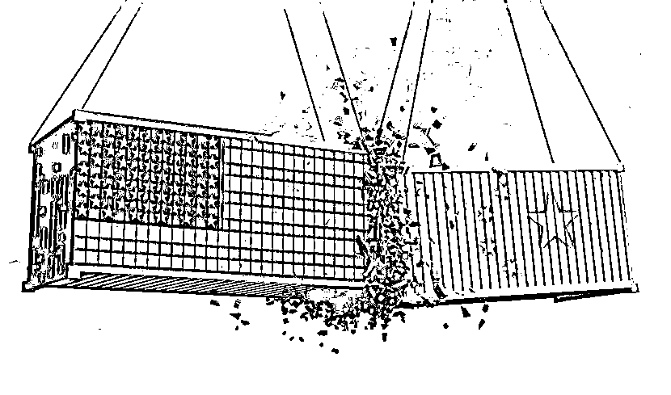

来源：https://vliajwma3m.feishu.cn/docx/LwTDdbKrtoI7lxxZw8ycFMZ9nfg
上午看完黄奇帆在广东省委党校的演讲，启发还挺大的。
他的重点是在讲“新质生产力”，这是一个非常热的词。
很多人以为国家大事儿距离自己很遥远
看不懂、摸不透，也懒得看，懒得研究
但是时代的一粒灰尘，
落到每一个人身上都是一座大山。
互联网反垄断、双减政策，
也让很多人的命运因此发生巨变。
一个人的命运固然要靠自我奋斗，但更重要的是历史进程。
可能也得益于我就是学新闻的，
在腾讯新闻，也有过6年的新闻报道经验，
比较熟悉政治与经济的周期政策、政治语言和信号
这也让我对一些政策变化、高层讲话和解读，有了更深的敏感。
所以本篇文章，我也把大家关心的问题，放在开头。
一、国家提倡新质生产力背景下，普通人如何选准行业赛道、公司类型、岗位？
二、文科生有哪些岗位可以作为切入点？
三、普通人没技术、没资金、没团队，轻创业应该如何跟“新质生产力”结合起来？应该注意哪些误区？
四、这篇演讲让我涨了哪些知识？纠正了哪些误区？
五、关于“大厂转型人强哥”
我也整理了黄奇帆的这篇演讲稿3万字，附在本文最后了。希望对大家有帮助。
1、行业和领域选择：应关注新能源、新材料、数字智能技术、生物医药和高端装备制造等五大板块相关的行业和领域，这些是新质生产力发展的重点，代表着时代的进步和创新，未来具有较大的发展潜力。
2、公司类型选择：可以考虑具有创新能力、注重研发投入的公司，如那些在产业链中处于链头地位、能够掌控生产性服务业的企业，或者是参与产业互联网的公司，这类公司更有可能在新质生产力的发展中占据优势。
3、岗位选择：倾向于与科研创新、数字化、生产性服务业相关的岗位，例如产业链上的科研创新岗位、数字化技术相关岗位（如大数据、云计算、人工智能等）、十大生产性服务业中的各类岗位（如研发设计、检验检测、物流配送、金融服务、数字化赋能等）。
这些岗位与新质生产力的发展密切相关，可能会有更多的发展机会和空间。
核心逻辑是：硬科技咱搞不了，但是其他软技能，咱们是没有问题的。
1、支撑类：人力、财务、法务（含知识产权与专利管理）、行政、客服、数据分析、
2、品牌推广类：市场、品牌、公关，商务BD。
因为这些企业也急需跟大众沟通。余承东搞一场发布会，少不了很多品牌向文科生的支持。
3、运营类：用户运营、私域运营、短视频运营、直播运营。
短视频和直播已经格式化了人们的大脑，已经成为了各大企业的必选。
雷军的短视频运营团队就很厉害，能够时刻保持更新、随时和网友保持互动。
蔚来汽车的用户运营就非常棒，即便你在青藏高原车子抛锚了，附近也会有相关人员支持。
我也以AIGC为例，详细梳理了几大岗位类型，感兴趣的可以移步到飞书文档👇🏻
需要注意的误区：
例如：
总之，轻创业结合新质生产力，可以从自身实际出发，选择适合自己的方式，充分利用新质生产力的优势，实现创业目标。
以前，经济增长主要有四种途径：
①是多投入资源、资金和劳动力，就像盖房子，不断投入材料和工人来增加产出，但这样会带来资源浪费和环境问题，而且成本越来越高。
比如，1980年中国GDP总量2000亿美元，人均GDP200美元，到2023年中国GDP达到126万亿人民币，但2023年我国GDP消耗了地球各种资源量的50%，我国以全球20% - 30%的产出规模，消耗了全球地下资源的50%，如果继续按这个比例下去，资源难以支撑。
同时，我国劳动力人口也在减少，1950年到1980年人口增长较快，而现在人口出生率下降，老龄化加剧，劳动力优势减弱。
②是靠国际贸易和投资，但现在国际形势变化，我国外循环比重从2006年占GDP比重71%降到了2023年的38%，这条路也面临挑战。
③是通过侵略和掠夺，但这是不道德的，我们也不能这么做。
④是提高全要素生产率，也就是靠科技进步和优化资源配置来促进经济增长。
目前中国的全要素生产率增速仅有美欧发达国家的40% - 60%，有较大的增长空间。
中国过去几十年发展很快，但现在靠传统的方式已经不行了。
所以，我们必须发展新质生产力，依靠科技进步来提高效率，创造更多的价值。
比如说，现在的新能源汽车，不仅更环保，还能带动相关技术的发展，这就是新质生产力的体现。
只要努力发展新质生产力，就能实现高质量发展，让我们的生活变得更好。

①**能源板块**：比如，以前我们主要用煤炭发电，现在发展太阳能、风能等清洁能源。
就像我们家里安装的太阳能热水器，利用太阳能来加热水，既环保又节能。
② **材料板块**：从远古的石器时代到现在的各种新材料，如集成电路用的硅材料、石墨烯材料等。
比如，手机里的芯片就是用硅材料制成的，使得手机变得更小、更智能。
③**数字智能技术板块**：比如智能手机、智能家电、自动驾驶汽车等。
它们利用人工智能、大数据等技术，让我们的生活更加便捷和智能。
④ **生物医药板块**：研发创新医药，能治疗各种疾病，延长人们的寿命。
比如，新冠疫苗的研发就是生物医药的重要成果，帮助我们预防疾病。
⑤ **高端装备制造板块**：例如宇宙飞船的发动机、飞机的发动机、高端数控装备等。这些高端装备的制造，提高了生产效率，推动了科技的进步。
生产性服务业的发展程度可以用五个宏观指标来衡量。例如，生产性服务业占GDP的比重，美国占50%，欧盟占40%，
而中国去年GDP中服务业增加值占54.6%，其中生产性服务业占比27%左右。
以苹果在中国的生产为例，苹果在中国一年生产1.7亿部手机，总销售额1700亿美元，苹果凭其十大生产性服务业的优势，能拿走约75%的利润，中国制造业企业仅拿走170亿美元。
生产性服务业就像是新质生产力的“强力助手”，它涵盖了十大类，包括产业链上的科研创新、检验检测、物流配送、金融、生态环保、数字化赋能、贸易批发零售、品牌专利保护和推广营销、服务外包、售后服务等。
以苹果为例，它在产业链上的科研创新方面不断推出新的产品，如iPhone手机，其零部件的开发和生产线的优化都体现了科研创新的力量。
在检验检测方面，苹果对零部件的质量要求极高，确保了产品的品质。
物流配送方面，苹果能将产品及时准确地送达全球各地的消费者手中。
金融服务上，它通过合理的资金运作支持企业的发展。
生态环保方面，也在努力减少产品生产对环境的影响。数字化赋能使得苹果的生产和运营更加高效。
贸易批发零售方面，苹果产品在全球市场上有着广泛的销售渠道。
品牌专利保护和推广营销让苹果成为全球知名品牌。
服务外包方面，它将许多非核心业务外包给专业的公司。
售后服务上，苹果提供优质的售后支持，增强了消费者的满意度。
推荐2本黄奇帆的著作，大部头，方便你读懂国家大政方针，不容易读懂，需要反复阅读和琢磨【京东和微信读书都有】，感兴趣的自己去搜吧
以下为您推荐几本黄奇帆的著作：
黄奇帆的著作通俗易懂地为读者解读了中国经济的现状、问题和未来发展方向，对于想要了解中国经济的读者具有很大的启发和参考价值。
大厂转型人强哥（公号可找到我，欢迎来聊），选择力新职业教育，帮助职场人0经验转行，负责内容与增长、产品运营、用户运营。ex腾讯、字节。
关注AIGC机会+AI大模型和应用团队，重点研究“文科生如何抓住AI红利？”，欢迎优秀团队加V交流，期待有合作机会。
你有什么疑问的，可以直接写在评论区哈👇🏻
过往精华文章
9000字深度解析 | AI如何重构搜索？会颠覆谷歌&百度吗？
8000字深度解析：文科生如何抓住AIGC机会？揭秘新职业红利&避坑指南！
3000字干货 | 我，30岁+文科生，日常如何使用AI提效+赚钱？
干货帖 | 如何靠chatgpt/谷歌Gemini快速了解行业+公司？